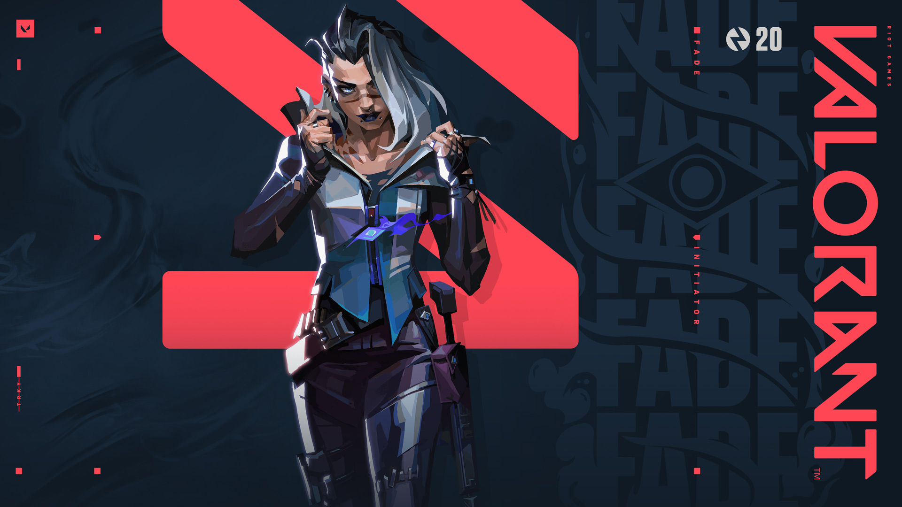

Vous n'avez vraiment pas envie de tomber sur Fade dans le noir, mais il faut que vous sachiez jusqu'où mène cette piste.
Suivez la grande finale des Masters de Reykjavik le 24 avril pour ne pas manquer les premières images et actions de Fade sur le terrain et regarder l'entretien avec les développeurs de VALORANT.
